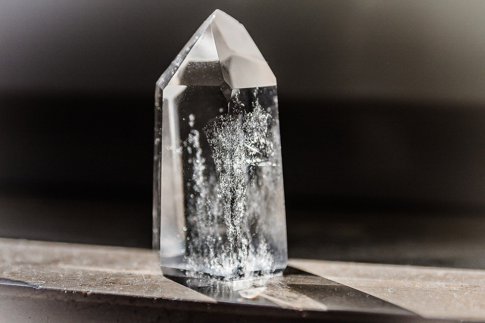

固体物理复习概要
最后更新：2021.05.31, 17:31
本文总结了本科固体物理学习的主要知识. 该文章于去年为理念经所夏令营面试做准备所写, 最早发布于知乎, 原标题为 “两个月速成 (误) 物理学本科高年级课程之固体物理篇: 总纲“.

大纲
正文
本专栏中涉及的固体物理主要可以分为五个部分 (对应与黄昆的固体物理教材的第 1 至 5 章), 下面分别进行简要介绍.
第一部分主要从数学的角度讲述了如何描述三维点阵的周期性. 在引入了布拉伐格子的概念后, 便可从纯数学的角度来探讨这种周期性. 对空间点阵进行傅里叶变换, 便可在频率空间对晶体进行讨论, 进而引入倒空间的概念 (倒空间的概念也可从对偶基矢的角度来引入. 事实上, 实空间基矢的倒格基矢就是其对偶基矢. 利用这种对偶基矢, 谈论晶格周期性时可以更方便地写出并矢, 从而研究晶体的特性时会更方便. 这种方法在群论的研究中被广泛采用.). 另一面, 利用倒格矢, 在研究晶面的时候也会更加方便. 在实验上, 通过布拉格衍射方程或劳厄衍射公式, 可以得到产生衍射时对于波矢的限制, 从而推出实验上直接观测到的衍射点阵实际上反映的是倒空间的点阵, 这进一步说明了引入倒空间的必要性. 此外, 还可很自然地在讨论衍射时引入布里渊区的概念, 其在后续的固体物理理论中被广泛使用.
晶体的全部对称操作形成一个对称变换群. 可以证明, 由于倒空间是实空间的对偶空间, 因此二者具有相同的对称性, 亦即实空间的对称变换同样是倒空间的对称变换. 对称操作的基本要求是晶格矢量变换后仍为晶格矢量, 进而可由此分析出可能的变换, 并对变换进行分类. 反之, 给定了对称操作, 其对晶格的排列方式又会作出限制, 由此可将晶体分为 7 大晶系以及 14 种布拉伐格子.
第二章则定性讲解了原子间是如何通过化学键连接起来的, 包含共价键, 离子键, 金属键, 范德瓦耳斯力. 其与高中化学中关于晶体的选修有不少相似之处, 但更侧重在量子力学的基础上对大体的物理图像进行解释. 需要进行计算的部分主要集中与离子键和共价键的部分. 离子键这一块主要是在引入结合能后, 推导出平衡条件 (结合能一阶导数为零), 并对平衡时的体变模量进行计算. 共价键这一块, 主要是在忽略电子间的耦合作用的情况下, 对于分子轨道进行计算 (严格来说这一部分是半定量的).
第三章主要分析了固体中的原子的运动, 基本的研究手段是简谐近似. 在经典处理上, 主要依赖于原子链模型, 以及引入了周期性边界条件的思想来对格波的振动模式进行限制. 在研究原胞含多个原子的体系时, 还将振动分为了光学支及声学支. 粗略而言, 光学支反映的是质心系内的自由度的振动 (内部振动), 声学支反映的是质心自由度的振动 (整体振动). 量子处理方面, 最重要的是引入了声子的概念, 以及通过玻色统计辅以不同的色散关系来对固体热容进行计算 (包括 Einstein 模型和 Debye 模型). 在对粒子晶体的红外光学性质的研究中, 介绍了 LST 关系, 其解释了长光学波的横波与纵波频率之间是如何通过介电常数向联系的. 在这一章的末尾, 还定性介绍了势能的非简谐项是如何引起热膨胀及热传导等效应的.
第四章和第五章则是侧重电子的介绍, 其主要的理论依据是能带论. 这里有三条基本近似以简化问题的研究, 分别是: 绝热近似, 周期性近似, 平均场近似.
第四章主要介绍了电子在周期性势场中的运动. 先是介绍了最一般情况下的 Bloch 定理, 揭示了周期性势场下电子波函数的基本特性. 再后面介绍了两种模型: 近自由电子模型与紧束缚模型. 两种模型处理的基本方法均是微扰论, 不同的在于微扰算符的不同.
对于近自由电子模型, 其假设周期性势场仅在其平均值附近具有较小的起伏, 因此可以将平均势能作为零阶微扰, 将势场相对平均势能的起伏视为微扰算符. 在布里渊区中心处, 通过非简并微扰即可解决问题. 但在布里渊区边界处, 不同边界的态对应的能量一致, 因此应采用简并微扰, 采用非简并微扰时会出现微扰能级无穷大的问题. 不过, 直接采用简并微扰不便于讨论能量在布里渊区边界附近的变化, 黄昆教材采用的方法是进行二能级近似, 以及只考虑相差一个倒格矢的两个布里渊区边界能级的影响.
对于紧束缚模型, 其是将单原子势场作为零阶微扰, 而将整个空间的周期场与所在原子提供的势场之差作为微扰算符. 由于零阶微扰时, 所有原子之间没有耦合, 因此它们之间的能级分布完全一致, 从而这是一个简并微扰的问题. 由于处理该问题时会将原本的能量本征态进行线性组合来得到记入微扰后的能量本征态, 因此也称之为原子轨道线性组合方法. 具体计算时, 往往又只考虑相邻原子之间的相互作用 (不由让人想到 Ising 模型), 进而使问题进一步简化.
这一章的最后, 还对能态密度和费米面进行了介绍. 计算能态密度的基本思想是, 限制能量为某个值, 从而在 $k$ 空间中诱导出一个曲面. 通过计算这个曲面上的能态数目即可得到能态密度. 换句话说, 这是将能态在 $k$ 空间的分布转化到能态按能量的分布. 另一方面, 由于电子波函数是全反称的, 其服从泡利不相容原理, 其无法像玻色子一样所有粒子都尽可能跑到低能级, 而是由下向上将能级进行填充, 从而电子数一定时, 最上侧的能级在 $k$ 空间中将对应一个曲面, 这个面即是费米面, 相应的能级称为费米能级.
第五章主要研究的是加入外部电磁场后电子的运动. 为了简化问题, 采用了准经典近似, 亦即研究 Bloch 波函数的波包的移动. 在考虑外场的作用时发现, 电子运动的描述类似牛顿运动方程的形式, 具体来说, 外力与电子波包的加速度呈线性关系. 由于外力和及电子的加速度均为矢量, 因此二者的线性变换应通过一个二阶张量来表述, 这个张量正是有效质量张量. 有效质量在真空中将会退化为电子的质量, 因此有效质量与电子质量的差异表征了电子与固体的周期性势场之间的耦合作用. 在准经典描述下, 还可结合能带论, 解释满带不导电与非满带导电的原因, 进而更深刻地理解导体和非导体的差异.
在外加磁场的研究方面, 除了通过准经典近似来计算波包在空间中的移动以外, 还通过量子理论研究了外加磁场时体系的能级. 具体而言, 写出外加磁场下的哈密顿量后, 通过化简可发现其具有和谐振子哈密顿量相同的形式, 由此得到的能级被称为朗道能级. 利用朗道能级, 可以定量解释 De Hass—Van Alphen 效应, 亦即固体的磁导率随磁感应强度倒数的周期性变化. 该效应的根本原因在于磁场的改变引起了朗道能级的变化. 具体来说, 磁场改变后, 能级的结构会发生变化, 进而影响费米面和费米能级. 这种变化关于磁感应强度的倒数的变化具有周期性, 这便是 D—V 效应的物理实质.
本博客所有文章除特别声明外，均采用 CC BY-NC-SA 4.0 协议 ，转载请注明出处！